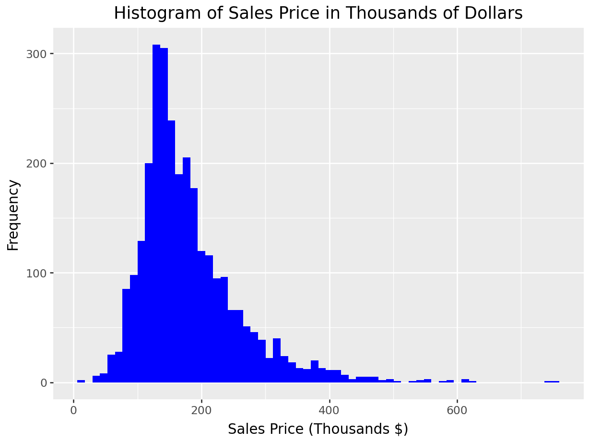
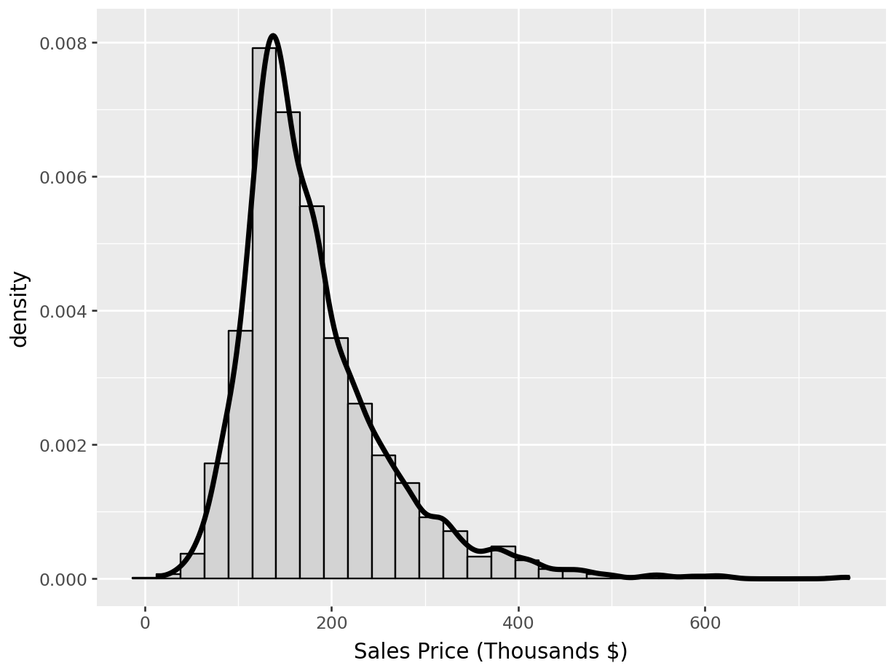
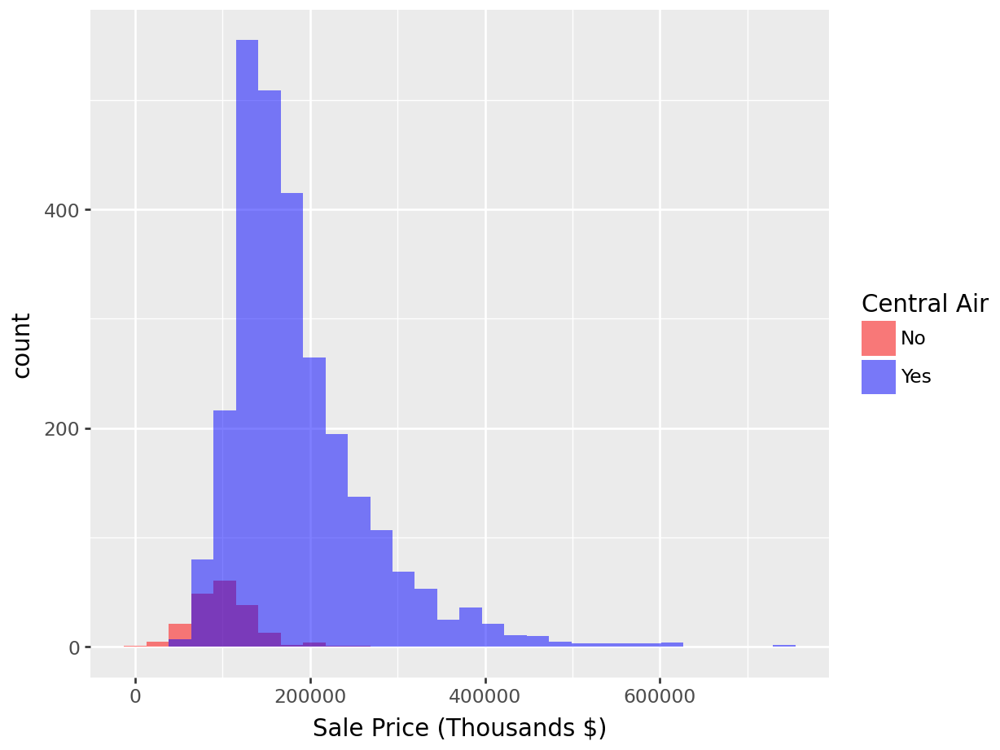
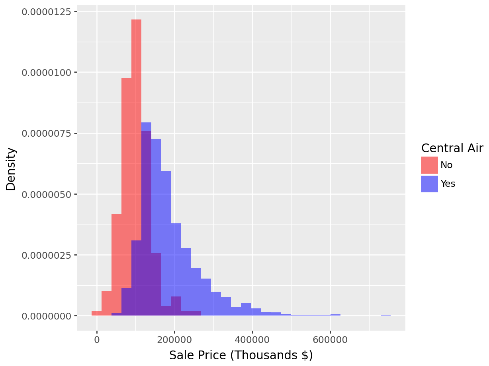
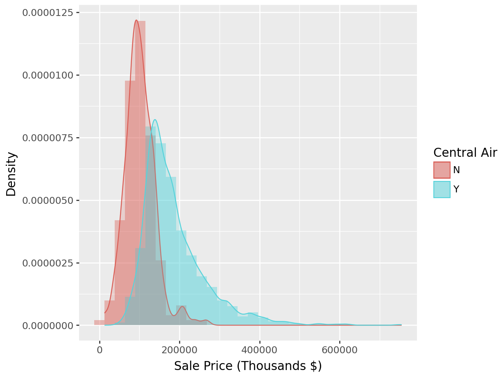
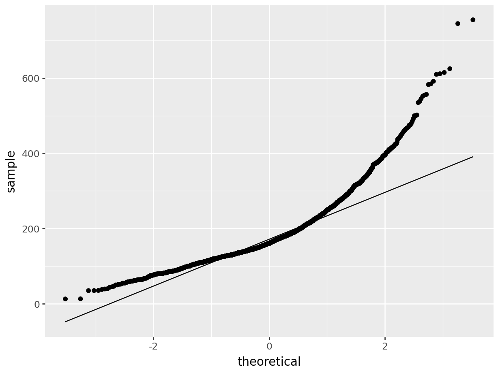
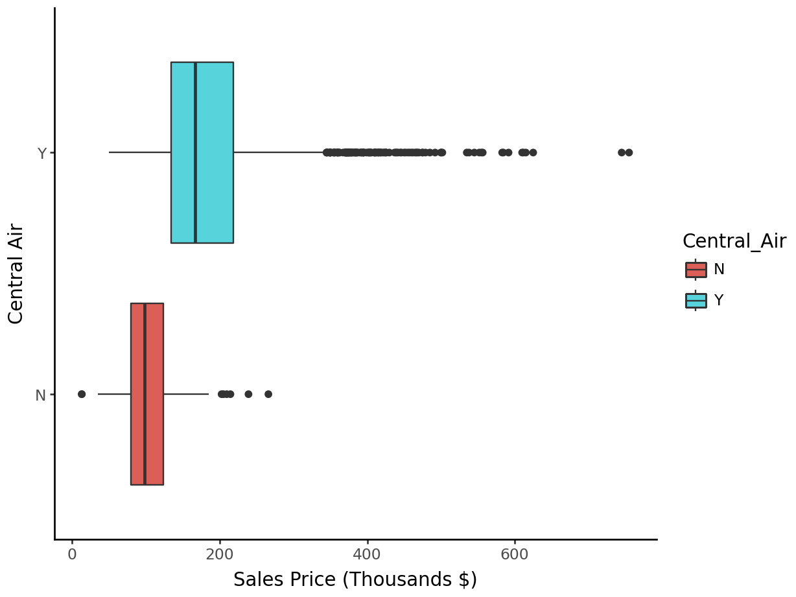
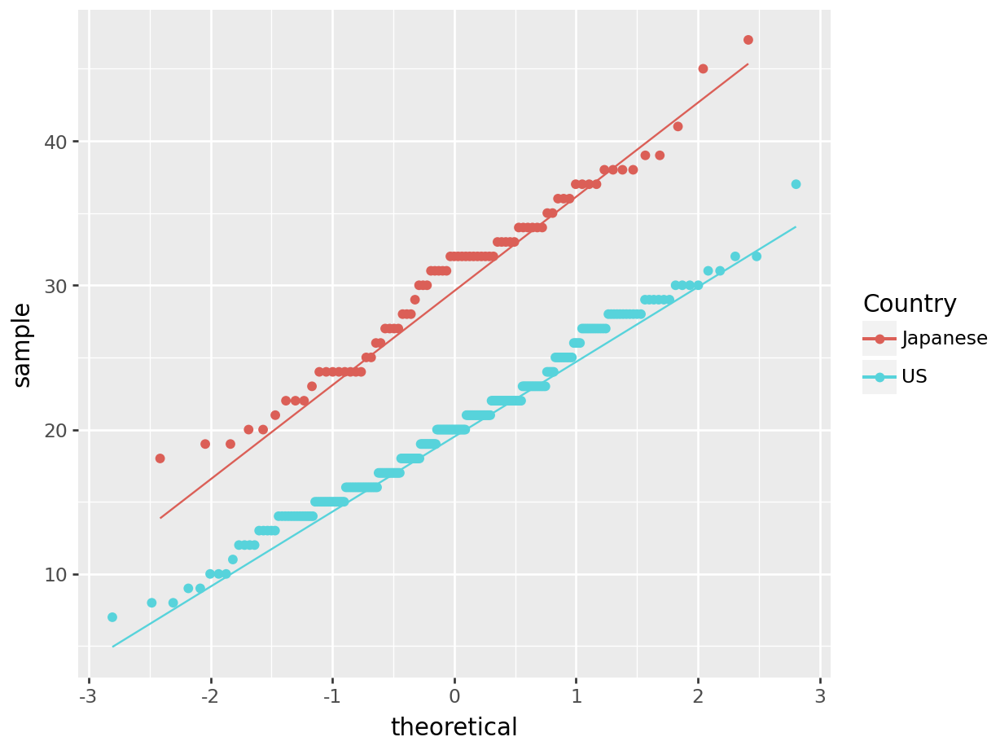

Chapter 1 Introduction to Statistics
Welcome to your introduction to statistics. You will be learning the basics of statistics, along with applications of statistics within the Python and R languages. This book will provide fundamentals of the concepts and the code to apply these concepts in both languages.
This Chapter aims to answer the following questions:
- What type of data is being analyzed?
- Nominal
- Ordinal
- Continuous/Discrete
- How do we describe distributions of these variables?
- Center
- Spread
- Shape
- Graphical Display
- How do we create confidence intervals for parameters?
- How do we perform hypothesis testing?
- One sample t-test
- Two sample t-test
- Testing Normality
- Testing Equality of Variances
- Testing Equality of Means
- Mann-Whitney-Wilcoxon Test
The following packages will be used in this textbook (there are some sections that add more later in the textbook, so keep your eyes open for those).
Installing packages:
1.0.0.1 R code:
install.packages('AmesHousing')
install.packages('tidyverse')
install.packages('car')
install.packages('DescTools')
install.packages('corrplot')
install.packages('mosaic')
install.packages('modelr')
install.packages('plotly')
install.packages('ggplot2')
install.packages('Hmisc')
install.packages('onehot')
install.packages('jmuOutlier')
install.packages('leaps')
install.packages('glmnet')
install.packages('nortest')
install.packages('lmtest')
install.packages('gmodels')
install.packages('TSA')
install.packages('carData')## tibble [2,930 × 81] (S3: tbl_df/tbl/data.frame)
## $ MS_SubClass : Factor w/ 16 levels "One_Story_1946_and_Newer_All_Styles",..: 1 1 1 1 6 6 12 12 12 6 ...
## $ MS_Zoning : Factor w/ 7 levels "Floating_Village_Residential",..: 3 2 3 3 3 3 3 3 3 3 ...
## $ Lot_Frontage : num [1:2930] 141 80 81 93 74 78 41 43 39 60 ...
## $ Lot_Area : int [1:2930] 31770 11622 14267 11160 13830 9978 4920 5005 5389 7500 ...
## $ Street : Factor w/ 2 levels "Grvl","Pave": 2 2 2 2 2 2 2 2 2 2 ...
## $ Alley : Factor w/ 3 levels "Gravel","No_Alley_Access",..: 2 2 2 2 2 2 2 2 2 2 ...
## $ Lot_Shape : Ord.factor w/ 4 levels "Irregular"<"Moderately_Irregular"<..: 3 4 3 4 3 3 4 3 3 4 ...
## $ Land_Contour : Ord.factor w/ 4 levels "Low"<"HLS"<"Bnk"<..: 4 4 4 4 4 4 4 2 4 4 ...
## $ Utilities : Ord.factor w/ 4 levels "ELO"<"NoSeWa"<..: 4 4 4 4 4 4 4 4 4 4 ...
## $ Lot_Config : Factor w/ 5 levels "Corner","CulDSac",..: 1 5 1 1 5 5 5 5 5 5 ...
## $ Land_Slope : Ord.factor w/ 3 levels "Sev"<"Mod"<"Gtl": 3 3 3 3 3 3 3 3 3 3 ...
## $ Neighborhood : Factor w/ 29 levels "North_Ames","College_Creek",..: 1 1 1 1 7 7 17 17 17 7 ...
## $ Condition_1 : Factor w/ 9 levels "Artery","Feedr",..: 3 2 3 3 3 3 3 3 3 3 ...
## $ Condition_2 : Factor w/ 8 levels "Artery","Feedr",..: 3 3 3 3 3 3 3 3 3 3 ...
## $ Bldg_Type : Factor w/ 5 levels "OneFam","TwoFmCon",..: 1 1 1 1 1 1 5 5 5 1 ...
## $ House_Style : Factor w/ 8 levels "One_and_Half_Fin",..: 3 3 3 3 8 8 3 3 3 8 ...
## $ Overall_Qual : Ord.factor w/ 10 levels "Very_Poor"<"Poor"<..: 6 5 6 7 5 6 8 8 8 7 ...
## $ Overall_Cond : Ord.factor w/ 10 levels "Very_Poor"<"Poor"<..: 5 6 6 5 5 6 5 5 5 5 ...
## $ Year_Built : int [1:2930] 1960 1961 1958 1968 1997 1998 2001 1992 1995 1999 ...
## $ Year_Remod_Add : int [1:2930] 1960 1961 1958 1968 1998 1998 2001 1992 1996 1999 ...
## $ Roof_Style : Factor w/ 6 levels "Flat","Gable",..: 4 2 4 4 2 2 2 2 2 2 ...
## $ Roof_Matl : Factor w/ 8 levels "ClyTile","CompShg",..: 2 2 2 2 2 2 2 2 2 2 ...
## $ Exterior_1st : Factor w/ 16 levels "AsbShng","AsphShn",..: 4 14 15 4 14 14 6 7 6 14 ...
## $ Exterior_2nd : Factor w/ 17 levels "AsbShng","AsphShn",..: 11 15 16 4 15 15 6 7 6 15 ...
## $ Mas_Vnr_Type : Factor w/ 5 levels "BrkCmn","BrkFace",..: 5 4 2 4 4 2 4 4 4 4 ...
## $ Mas_Vnr_Area : num [1:2930] 112 0 108 0 0 20 0 0 0 0 ...
## $ Exter_Qual : Ord.factor w/ 5 levels "Poor"<"Fair"<..: 3 3 3 4 3 3 4 4 4 3 ...
## $ Exter_Cond : Ord.factor w/ 5 levels "Poor"<"Fair"<..: 3 3 3 3 3 3 3 3 3 3 ...
## $ Foundation : Factor w/ 6 levels "BrkTil","CBlock",..: 2 2 2 2 3 3 3 3 3 3 ...
## $ Bsmt_Qual : Ord.factor w/ 6 levels "No_Basement"<..: 4 4 4 4 5 4 5 5 5 4 ...
## $ Bsmt_Cond : Ord.factor w/ 6 levels "No_Basement"<..: 5 4 4 4 4 4 4 4 4 4 ...
## $ Bsmt_Exposure : Ord.factor w/ 5 levels "No_Basement"<..: 5 2 2 2 2 2 3 2 2 2 ...
## $ BsmtFin_Type_1 : Ord.factor w/ 7 levels "No_Basement"<..: 5 4 6 6 7 7 7 6 7 2 ...
## $ BsmtFin_SF_1 : num [1:2930] 2 6 1 1 3 3 3 1 3 7 ...
## $ BsmtFin_Type_2 : Ord.factor w/ 7 levels "No_Basement"<..: 2 3 2 2 2 2 2 2 2 2 ...
## $ BsmtFin_SF_2 : num [1:2930] 0 144 0 0 0 0 0 0 0 0 ...
## $ Bsmt_Unf_SF : num [1:2930] 441 270 406 1045 137 ...
## $ Total_Bsmt_SF : num [1:2930] 1080 882 1329 2110 928 ...
## $ Heating : Factor w/ 6 levels "Floor","GasA",..: 2 2 2 2 2 2 2 2 2 2 ...
## $ Heating_QC : Ord.factor w/ 5 levels "Poor"<"Fair"<..: 2 3 3 5 4 5 5 5 5 4 ...
## $ Central_Air : Factor w/ 2 levels "N","Y": 2 2 2 2 2 2 2 2 2 2 ...
## $ Electrical : Ord.factor w/ 5 levels "Mix"<"FuseP"<..: 5 5 5 5 5 5 5 5 5 5 ...
## $ First_Flr_SF : int [1:2930] 1656 896 1329 2110 928 926 1338 1280 1616 1028 ...
## $ Second_Flr_SF : int [1:2930] 0 0 0 0 701 678 0 0 0 776 ...
## $ Low_Qual_Fin_SF : int [1:2930] 0 0 0 0 0 0 0 0 0 0 ...
## $ Gr_Liv_Area : int [1:2930] 1656 896 1329 2110 1629 1604 1338 1280 1616 1804 ...
## $ Bsmt_Full_Bath : num [1:2930] 1 0 0 1 0 0 1 0 1 0 ...
## $ Bsmt_Half_Bath : num [1:2930] 0 0 0 0 0 0 0 0 0 0 ...
## $ Full_Bath : int [1:2930] 1 1 1 2 2 2 2 2 2 2 ...
## $ Half_Bath : int [1:2930] 0 0 1 1 1 1 0 0 0 1 ...
## $ Bedroom_AbvGr : int [1:2930] 3 2 3 3 3 3 2 2 2 3 ...
## $ Kitchen_AbvGr : int [1:2930] 1 1 1 1 1 1 1 1 1 1 ...
## $ Kitchen_Qual : Ord.factor w/ 5 levels "Poor"<"Fair"<..: 3 3 4 5 3 4 4 4 4 4 ...
## $ TotRms_AbvGrd : int [1:2930] 7 5 6 8 6 7 6 5 5 7 ...
## $ Functional : Ord.factor w/ 8 levels "Sal"<"Sev"<"Maj2"<..: 8 8 8 8 8 8 8 8 8 8 ...
## $ Fireplaces : int [1:2930] 2 0 0 2 1 1 0 0 1 1 ...
## $ Fireplace_Qu : Ord.factor w/ 6 levels "No_Fireplace"<..: 5 1 1 4 4 5 1 1 4 4 ...
## $ Garage_Type : Factor w/ 7 levels "Attchd","Basment",..: 1 1 1 1 1 1 1 1 1 1 ...
## $ Garage_Finish : Ord.factor w/ 4 levels "No_Garage"<"Unf"<..: 4 2 2 4 4 4 4 3 3 4 ...
## $ Garage_Cars : num [1:2930] 2 1 1 2 2 2 2 2 2 2 ...
## $ Garage_Area : num [1:2930] 528 730 312 522 482 470 582 506 608 442 ...
## $ Garage_Qual : Ord.factor w/ 6 levels "No_Garage"<"Poor"<..: 4 4 4 4 4 4 4 4 4 4 ...
## $ Garage_Cond : Ord.factor w/ 6 levels "No_Garage"<"Poor"<..: 4 4 4 4 4 4 4 4 4 4 ...
## $ Paved_Drive : Ord.factor w/ 3 levels "Dirt_Gravel"<..: 2 3 3 3 3 3 3 3 3 3 ...
## $ Wood_Deck_SF : int [1:2930] 210 140 393 0 212 360 0 0 237 140 ...
## $ Open_Porch_SF : int [1:2930] 62 0 36 0 34 36 0 82 152 60 ...
## $ Enclosed_Porch : int [1:2930] 0 0 0 0 0 0 170 0 0 0 ...
## $ Three_season_porch: int [1:2930] 0 0 0 0 0 0 0 0 0 0 ...
## $ Screen_Porch : int [1:2930] 0 120 0 0 0 0 0 144 0 0 ...
## $ Pool_Area : int [1:2930] 0 0 0 0 0 0 0 0 0 0 ...
## $ Pool_QC : Ord.factor w/ 6 levels "No_Pool"<"Poor"<..: 1 1 1 1 1 1 1 1 1 1 ...
## $ Fence : Ord.factor w/ 5 levels "No_Fence"<"Minimum_Wood_Wire"<..: 1 4 1 1 4 1 1 1 1 1 ...
## $ Misc_Feature : Factor w/ 6 levels "Elev","Gar2",..: 3 3 2 3 3 3 3 3 3 3 ...
## $ Misc_Val : int [1:2930] 0 0 12500 0 0 0 0 0 0 0 ...
## $ Mo_Sold : int [1:2930] 5 6 6 4 3 6 4 1 3 6 ...
## $ Year_Sold : int [1:2930] 2010 2010 2010 2010 2010 2010 2010 2010 2010 2010 ...
## $ Sale_Type : Factor w/ 10 levels "COD","Con","ConLD",..: 10 10 10 10 10 10 10 10 10 10 ...
## $ Sale_Condition : Factor w/ 6 levels "Abnorml","AdjLand",..: 5 5 5 5 5 5 5 5 5 5 ...
## $ Sale_Price : int [1:2930] 215000 105000 172000 244000 189900 195500 213500 191500 236500 189000 ...
## $ Longitude : num [1:2930] -93.6 -93.6 -93.6 -93.6 -93.6 ...
## $ Latitude : num [1:2930] 42.1 42.1 42.1 42.1 42.1 ...
## - attr(*, "spec")=List of 2
## ..$ cols :List of 82
## .. ..$ Order : list()
## .. .. ..- attr(*, "class")= chr [1:2] "collector_integer" "collector"
## .. ..$ PID : list()
## .. .. ..- attr(*, "class")= chr [1:2] "collector_character" "collector"
## .. ..$ MS SubClass : list()
## .. .. ..- attr(*, "class")= chr [1:2] "collector_character" "collector"
## .. ..$ MS Zoning : list()
## .. .. ..- attr(*, "class")= chr [1:2] "collector_character" "collector"
## .. ..$ Lot Frontage : list()
## .. .. ..- attr(*, "class")= chr [1:2] "collector_integer" "collector"
## .. ..$ Lot Area : list()
## .. .. ..- attr(*, "class")= chr [1:2] "collector_integer" "collector"
## .. ..$ Street : list()
## .. .. ..- attr(*, "class")= chr [1:2] "collector_character" "collector"
## .. ..$ Alley : list()
## .. .. ..- attr(*, "class")= chr [1:2] "collector_character" "collector"
## .. ..$ Lot Shape : list()
## .. .. ..- attr(*, "class")= chr [1:2] "collector_character" "collector"
## .. ..$ Land Contour : list()
## .. .. ..- attr(*, "class")= chr [1:2] "collector_character" "collector"
## .. ..$ Utilities : list()
## .. .. ..- attr(*, "class")= chr [1:2] "collector_character" "collector"
## .. ..$ Lot Config : list()
## .. .. ..- attr(*, "class")= chr [1:2] "collector_character" "collector"
## .. ..$ Land Slope : list()
## .. .. ..- attr(*, "class")= chr [1:2] "collector_character" "collector"
## .. ..$ Neighborhood : list()
## .. .. ..- attr(*, "class")= chr [1:2] "collector_character" "collector"
## .. ..$ Condition 1 : list()
## .. .. ..- attr(*, "class")= chr [1:2] "collector_character" "collector"
## .. ..$ Condition 2 : list()
## .. .. ..- attr(*, "class")= chr [1:2] "collector_character" "collector"
## .. ..$ Bldg Type : list()
## .. .. ..- attr(*, "class")= chr [1:2] "collector_character" "collector"
## .. ..$ House Style : list()
## .. .. ..- attr(*, "class")= chr [1:2] "collector_character" "collector"
## .. ..$ Overall Qual : list()
## .. .. ..- attr(*, "class")= chr [1:2] "collector_integer" "collector"
## .. ..$ Overall Cond : list()
## .. .. ..- attr(*, "class")= chr [1:2] "collector_integer" "collector"
## .. ..$ Year Built : list()
## .. .. ..- attr(*, "class")= chr [1:2] "collector_integer" "collector"
## .. ..$ Year Remod/Add : list()
## .. .. ..- attr(*, "class")= chr [1:2] "collector_integer" "collector"
## .. ..$ Roof Style : list()
## .. .. ..- attr(*, "class")= chr [1:2] "collector_character" "collector"
## .. ..$ Roof Matl : list()
## .. .. ..- attr(*, "class")= chr [1:2] "collector_character" "collector"
## .. ..$ Exterior 1st : list()
## .. .. ..- attr(*, "class")= chr [1:2] "collector_character" "collector"
## .. ..$ Exterior 2nd : list()
## .. .. ..- attr(*, "class")= chr [1:2] "collector_character" "collector"
## .. ..$ Mas Vnr Type : list()
## .. .. ..- attr(*, "class")= chr [1:2] "collector_character" "collector"
## .. ..$ Mas Vnr Area : list()
## .. .. ..- attr(*, "class")= chr [1:2] "collector_integer" "collector"
## .. ..$ Exter Qual : list()
## .. .. ..- attr(*, "class")= chr [1:2] "collector_character" "collector"
## .. ..$ Exter Cond : list()
## .. .. ..- attr(*, "class")= chr [1:2] "collector_character" "collector"
## .. ..$ Foundation : list()
## .. .. ..- attr(*, "class")= chr [1:2] "collector_character" "collector"
## .. ..$ Bsmt Qual : list()
## .. .. ..- attr(*, "class")= chr [1:2] "collector_character" "collector"
## .. ..$ Bsmt Cond : list()
## .. .. ..- attr(*, "class")= chr [1:2] "collector_character" "collector"
## .. ..$ Bsmt Exposure : list()
## .. .. ..- attr(*, "class")= chr [1:2] "collector_character" "collector"
## .. ..$ BsmtFin Type 1 : list()
## .. .. ..- attr(*, "class")= chr [1:2] "collector_character" "collector"
## .. ..$ BsmtFin SF 1 : list()
## .. .. ..- attr(*, "class")= chr [1:2] "collector_integer" "collector"
## .. ..$ BsmtFin Type 2 : list()
## .. .. ..- attr(*, "class")= chr [1:2] "collector_character" "collector"
## .. ..$ BsmtFin SF 2 : list()
## .. .. ..- attr(*, "class")= chr [1:2] "collector_integer" "collector"
## .. ..$ Bsmt Unf SF : list()
## .. .. ..- attr(*, "class")= chr [1:2] "collector_integer" "collector"
## .. ..$ Total Bsmt SF : list()
## .. .. ..- attr(*, "class")= chr [1:2] "collector_integer" "collector"
## .. ..$ Heating : list()
## .. .. ..- attr(*, "class")= chr [1:2] "collector_character" "collector"
## .. ..$ Heating QC : list()
## .. .. ..- attr(*, "class")= chr [1:2] "collector_character" "collector"
## .. ..$ Central Air : list()
## .. .. ..- attr(*, "class")= chr [1:2] "collector_character" "collector"
## .. ..$ Electrical : list()
## .. .. ..- attr(*, "class")= chr [1:2] "collector_character" "collector"
## .. ..$ 1st Flr SF : list()
## .. .. ..- attr(*, "class")= chr [1:2] "collector_integer" "collector"
## .. ..$ 2nd Flr SF : list()
## .. .. ..- attr(*, "class")= chr [1:2] "collector_integer" "collector"
## .. ..$ Low Qual Fin SF: list()
## .. .. ..- attr(*, "class")= chr [1:2] "collector_integer" "collector"
## .. ..$ Gr Liv Area : list()
## .. .. ..- attr(*, "class")= chr [1:2] "collector_integer" "collector"
## .. ..$ Bsmt Full Bath : list()
## .. .. ..- attr(*, "class")= chr [1:2] "collector_integer" "collector"
## .. ..$ Bsmt Half Bath : list()
## .. .. ..- attr(*, "class")= chr [1:2] "collector_integer" "collector"
## .. ..$ Full Bath : list()
## .. .. ..- attr(*, "class")= chr [1:2] "collector_integer" "collector"
## .. ..$ Half Bath : list()
## .. .. ..- attr(*, "class")= chr [1:2] "collector_integer" "collector"
## .. ..$ Bedroom AbvGr : list()
## .. .. ..- attr(*, "class")= chr [1:2] "collector_integer" "collector"
## .. ..$ Kitchen AbvGr : list()
## .. .. ..- attr(*, "class")= chr [1:2] "collector_integer" "collector"
## .. ..$ Kitchen Qual : list()
## .. .. ..- attr(*, "class")= chr [1:2] "collector_character" "collector"
## .. ..$ TotRms AbvGrd : list()
## .. .. ..- attr(*, "class")= chr [1:2] "collector_integer" "collector"
## .. ..$ Functional : list()
## .. .. ..- attr(*, "class")= chr [1:2] "collector_character" "collector"
## .. ..$ Fireplaces : list()
## .. .. ..- attr(*, "class")= chr [1:2] "collector_integer" "collector"
## .. ..$ Fireplace Qu : list()
## .. .. ..- attr(*, "class")= chr [1:2] "collector_character" "collector"
## .. ..$ Garage Type : list()
## .. .. ..- attr(*, "class")= chr [1:2] "collector_character" "collector"
## .. ..$ Garage Yr Blt : list()
## .. .. ..- attr(*, "class")= chr [1:2] "collector_integer" "collector"
## .. ..$ Garage Finish : list()
## .. .. ..- attr(*, "class")= chr [1:2] "collector_character" "collector"
## .. ..$ Garage Cars : list()
## .. .. ..- attr(*, "class")= chr [1:2] "collector_integer" "collector"
## .. ..$ Garage Area : list()
## .. .. ..- attr(*, "class")= chr [1:2] "collector_integer" "collector"
## .. ..$ Garage Qual : list()
## .. .. ..- attr(*, "class")= chr [1:2] "collector_character" "collector"
## .. ..$ Garage Cond : list()
## .. .. ..- attr(*, "class")= chr [1:2] "collector_character" "collector"
## .. ..$ Paved Drive : list()
## .. .. ..- attr(*, "class")= chr [1:2] "collector_character" "collector"
## .. ..$ Wood Deck SF : list()
## .. .. ..- attr(*, "class")= chr [1:2] "collector_integer" "collector"
## .. ..$ Open Porch SF : list()
## .. .. ..- attr(*, "class")= chr [1:2] "collector_integer" "collector"
## .. ..$ Enclosed Porch : list()
## .. .. ..- attr(*, "class")= chr [1:2] "collector_integer" "collector"
## .. ..$ 3Ssn Porch : list()
## .. .. ..- attr(*, "class")= chr [1:2] "collector_integer" "collector"
## .. ..$ Screen Porch : list()
## .. .. ..- attr(*, "class")= chr [1:2] "collector_integer" "collector"
## .. ..$ Pool Area : list()
## .. .. ..- attr(*, "class")= chr [1:2] "collector_integer" "collector"
## .. ..$ Pool QC : list()
## .. .. ..- attr(*, "class")= chr [1:2] "collector_character" "collector"
## .. ..$ Fence : list()
## .. .. ..- attr(*, "class")= chr [1:2] "collector_character" "collector"
## .. ..$ Misc Feature : list()
## .. .. ..- attr(*, "class")= chr [1:2] "collector_character" "collector"
## .. ..$ Misc Val : list()
## .. .. ..- attr(*, "class")= chr [1:2] "collector_integer" "collector"
## .. ..$ Mo Sold : list()
## .. .. ..- attr(*, "class")= chr [1:2] "collector_integer" "collector"
## .. ..$ Yr Sold : list()
## .. .. ..- attr(*, "class")= chr [1:2] "collector_integer" "collector"
## .. ..$ Sale Type : list()
## .. .. ..- attr(*, "class")= chr [1:2] "collector_character" "collector"
## .. ..$ Sale Condition : list()
## .. .. ..- attr(*, "class")= chr [1:2] "collector_character" "collector"
## .. ..$ SalePrice : list()
## .. .. ..- attr(*, "class")= chr [1:2] "collector_integer" "collector"
## ..$ default: list()
## .. ..- attr(*, "class")= chr [1:2] "collector_guess" "collector"
## ..- attr(*, "class")= chr "col_spec"1.0.1 Python Code:
import pandas as pd
import numpy as np
from sklearn.preprocessing import OneHotEncoder
import seaborn as sns
import matplotlib.pyplot as plt
from numpy import random
import statsmodels.api as sma
import statsmodels as sm
import pylab as py
import scipy.stats as stats
import scipy as sp
import statsmodels.formula.api as smf
import sklearn
from sklearn.linear_model import Ridge
from sklearn.linear_model import Lasso
from sklearn.linear_model import ElasticNet
from sklearn.metrics import mean_squared_error
from plotnine import *
## This brings in the Ames housing data
ames_py = pd.read_csv('https://raw.githubusercontent.com/IAA-Faculty/statistical_foundations/refs/heads/master/Ames.csv')
ames_py## MS_SubClass ... Latitude
## 0 One_Story_1946_and_Newer_All_Styles ... 42.054035
## 1 One_Story_1946_and_Newer_All_Styles ... 42.053014
## 2 One_Story_1946_and_Newer_All_Styles ... 42.052659
## 3 One_Story_1946_and_Newer_All_Styles ... 42.051245
## 4 Two_Story_1946_and_Newer ... 42.060899
## ... ... ... ...
## 2925 Split_or_Multilevel ... 41.988964
## 2926 One_Story_1946_and_Newer_All_Styles ... 41.988314
## 2927 Split_Foyer ... 41.986510
## 2928 One_Story_1946_and_Newer_All_Styles ... 41.990921
## 2929 Two_Story_1946_and_Newer ... 41.989265
##
## [2930 rows x 81 columns]1.1 Exploratory Data Analysis (EDA)
The crucial first step to any data science problem is exploratory data analysis (EDA). Before you attempt to run any models, or jump towards any formal statistical analysis, you must explore your data. Many unexpected frustrations arise when exploratory analysis is overlooked; knowing your data is critical to your ability to make necessary assumptions about it and analyzing it appropriately. This preliminary analysis will help inform our decisions for data manipulation, give us a base-level understanding of our variables and the relationships between them, and help determine which statistical analyses might be appropriate for the questions we are trying to answer. Some of the questions we aim to answer through exploratory analysis are:
- What kind of variables do you have?
- Continuous
- Nominal
- Ordinal
- How are the attributes stored?
- Strings
- Integers
- Floats/Numeric
- Dates
- What do their distributions look like?
- Center/Location
- Spread
- Shape
- Are there any anomolies?
- Outliers
- Leverage points
- Missing values
- Low-frequency categories
Throughout the textbook, we will continue to use a real-estate data set that contains the sale_price and numerous physical attributes of nearly 3,000 homes in Ames, Iowa in the early 2000s. The chunks above provide the code to import the Ames housing data into both Python and R.
1.1.1 Types of Variables
The columns of a data set are referred to by the following equivalent terms:
- Variables
- Features
- Attributes
- Predictors/Targets
- Factors
- Inputs/Outputs
This book may use any of these words interchangeably to refer to a quality or quantity of interest in our data.
1.1.2 Nominal Variables
A nominal or categorical variable is a quality of interest whose values have no logical ordering. Color (“blue”, “red”, “green”…), ethnicity (“African-American”, “Asian”, “Caucasian”,…), and style of house (“ranch”, “two-story”, “duplex”, …) are all examples of nominal attributes. The categories or values that these variables can take on - those words listed in quotes and parenthesis - are called the levels of the variable.
In modeling, nominal attributes are commonly transformed into dummy variables. Dummy variables are binary columns that indicate the presence or absence of a quality. There is more than one way to create dummy variables, and the treatment/estimates will be different depending on what type of model you are using. Linear regression models will use either reference-level or effects coding, whereas other machine learning models are more likely to use one-hot encoding or a variation thereof.
One-hot encoding
For machine learning applications, it is common to create a binary dummy column for each level of your categorical variable. This is the most intuitive representation of categorical information, answering indicative questions for each level of the variable: “is it blue?”, “is it red?” etc. The table below gives an example of some data, the original nominal variable (color) and the one-hot encoded color information.
| Observation | Color | Blue | Red | Yellow | Other |
| 1 | Blue | 1 | 0 | 0 | 0 |
| 2 | Yellow | 0 | 0 | 1 | 0 |
| 3 | Blue | 1 | 0 | 0 | 0 |
| 4 | Red | 0 | 1 | 0 | 0 |
| 5 | Red | 0 | 1 | 0 | 0 |
| 6 | Blue | 1 | 0 | 0 | 0 |
| 7 | Yellow | 0 | 0 | 1 | 0 |
| 8 | Other | 0 | 0 | 0 | 1 |
We will demonstrate the creation of this data using some simple random categorical data:
set.seed(41)
dat <- data.frame(y = c(rnorm(10,2), rnorm(10,1),rnorm(10,0)),
x1 = factor(rep(c("A", "B", "C"), each = 10)),
x2 = factor(rep(c("Z", "X", "Y","W","V","U"), each = 5)))
print(dat)## y x1 x2
## 1 1.2056317 A Z
## 2 2.1972575 A Z
## 3 3.0017043 A Z
## 4 3.2888254 A Z
## 5 2.9057534 A Z
## 6 2.4936675 A X
## 7 2.5992858 A X
## 8 0.4203930 A X
## 9 3.0006207 A X
## 10 4.1880077 A X
## 11 -0.2093244 B Y
## 12 0.4126881 B Y
## 13 2.0561206 B Y
## 14 0.6834151 B Y
## 15 0.9454590 B Y
## 16 1.3297513 B W
## 17 1.6630951 B W
## 18 1.8783282 B W
## 19 1.2028743 B W
## 20 3.2744025 B W
## 21 -0.8992970 C V
## 22 2.1394903 C V
## 23 -1.1659510 C V
## 24 -0.0471304 C V
## 25 0.4158763 C V
## 26 1.7200805 C U
## 27 -0.7843607 C U
## 28 -1.3039296 C U
## 29 -0.4520359 C U
## 30 -1.7739919 C UUnlike reference and effects coding, which are used in linear regression models, one-hot encoding is most quickly achieved through use of the onehot package in R, which first creates an “encoder” to do the job quickly.
The speed of this function has been tested against both the base R model.matrix() function and the dummyVars() function in the caret package and is substantially faster than either.
1.1.2.1 R code:
You will need to bring the packages into your currently opened R session (this will need to be done whenever you open a new session):
library(AmesHousing)
library(tidyverse)
library(car)
library(DescTools)
library(corrplot)
library(mosaic)
library(modelr)
library(plotly)
library(ggplot2)
library(Hmisc)
library(onehot)
library(jmuOutlier)
library(leaps)
library(glmnet)
library(nortest)
library(lmtest)
library(gmodels)
library(TSA)
library(carData)To create one-hot encoding in R:
## y x1=A x1=B x1=C x2=U x2=V x2=W x2=X x2=Y x2=Z
## [1,] 1.205632 1 0 0 0 0 0 0 0 1
## [2,] 2.197258 1 0 0 0 0 0 0 0 1
## [3,] 3.001704 1 0 0 0 0 0 0 0 1
## [4,] 3.288825 1 0 0 0 0 0 0 0 1
## [5,] 2.905753 1 0 0 0 0 0 0 0 1
## [6,] 2.493667 1 0 0 0 0 0 1 0 01.1.3 Python Code
For one-hot encoding in Python:
x1=np.repeat(["A","B","C"],10)
x2=np.repeat(["Z", "X", "Y","W","V","U"],5)
random.seed(41)
y=np.concatenate([np.random.normal(loc=2.0, scale=1.0, size=10),np.random.normal(loc=1.0, scale=1.0, size=10),np.random.normal(loc=0.0, scale=1.0, size=10)])
array=np.array([x1,x2,y])
array2=np.transpose(array)
column_values=["x1","x2","y"]
df = pd.DataFrame(data = array2,
columns = column_values)
print(df)## x1 x2 y
## 0 A Z 1.7292876769326795
## 1 A Z 2.10484805260974
## 2 A Z 2.250527815723572
## 3 A Z 1.0748000347219233
## 4 A Z 2.567143660285906
## 5 A X 0.9598197839170619
## 6 A X 1.8463240485420624
## 7 A X 2.789851810346819
## 8 A X 0.7737841535581458
## 9 A X 1.0519930122865415
## 10 B Y 0.4303460580699353
## 11 B Y 0.022849785302227588
## 12 B Y 0.22936828881644922
## 13 B Y 0.9662887085465139
## 14 B Y -0.032859245166130036
## 15 B W 2.1424273766831528
## 16 B W 0.3902219923125273
## 17 B W 2.46941638687667
## 18 B W 2.4926788367383335
## 19 B W 1.7071252278892184
## 20 C V -1.8584902566516113
## 21 C V -1.3706237711281049
## 22 C V -0.33010638792060293
## 23 C V -1.5152899458722047
## 24 C V 1.2000601858215505
## 25 C U -1.8226191434208407
## 26 C U 0.26938454136355156
## 27 C U -0.44642437564718757
## 28 C U 1.1143136000921545
## 29 C U -1.3808025981774998one_hot_encoded_data = pd.get_dummies(df, columns = ['x1', 'x2'],dtype=int)
print(one_hot_encoded_data)## y x1_A x1_B x1_C x2_U x2_V x2_W x2_X x2_Y x2_Z
## 0 1.7292876769326795 1 0 0 0 0 0 0 0 1
## 1 2.10484805260974 1 0 0 0 0 0 0 0 1
## 2 2.250527815723572 1 0 0 0 0 0 0 0 1
## 3 1.0748000347219233 1 0 0 0 0 0 0 0 1
## 4 2.567143660285906 1 0 0 0 0 0 0 0 1
## 5 0.9598197839170619 1 0 0 0 0 0 1 0 0
## 6 1.8463240485420624 1 0 0 0 0 0 1 0 0
## 7 2.789851810346819 1 0 0 0 0 0 1 0 0
## 8 0.7737841535581458 1 0 0 0 0 0 1 0 0
## 9 1.0519930122865415 1 0 0 0 0 0 1 0 0
## 10 0.4303460580699353 0 1 0 0 0 0 0 1 0
## 11 0.022849785302227588 0 1 0 0 0 0 0 1 0
## 12 0.22936828881644922 0 1 0 0 0 0 0 1 0
## 13 0.9662887085465139 0 1 0 0 0 0 0 1 0
## 14 -0.032859245166130036 0 1 0 0 0 0 0 1 0
## 15 2.1424273766831528 0 1 0 0 0 1 0 0 0
## 16 0.3902219923125273 0 1 0 0 0 1 0 0 0
## 17 2.46941638687667 0 1 0 0 0 1 0 0 0
## 18 2.4926788367383335 0 1 0 0 0 1 0 0 0
## 19 1.7071252278892184 0 1 0 0 0 1 0 0 0
## 20 -1.8584902566516113 0 0 1 0 1 0 0 0 0
## 21 -1.3706237711281049 0 0 1 0 1 0 0 0 0
## 22 -0.33010638792060293 0 0 1 0 1 0 0 0 0
## 23 -1.5152899458722047 0 0 1 0 1 0 0 0 0
## 24 1.2000601858215505 0 0 1 0 1 0 0 0 0
## 25 -1.8226191434208407 0 0 1 1 0 0 0 0 0
## 26 0.26938454136355156 0 0 1 1 0 0 0 0 0
## 27 -0.44642437564718757 0 0 1 1 0 0 0 0 0
## 28 1.1143136000921545 0 0 1 1 0 0 0 0 0
## 29 -1.3808025981774998 0 0 1 1 0 0 0 0 0Reference-level coding
Reference-level coding is similar to one-hot encoding except one of the levels of the attribute, called the reference level, is omitted. Notice that the 4 dummy columns from Table 1.1 collectively form a linearly dependent set; that is, if you know the values of 3 of the 4 dummy variables you can determine the \(4^{th}\) with complete certainty. This would be a problem for linear regression, where we assume our input attributes are not linearly dependent as we will discuss when we get to Simple Linear Regression.
A reference level of the attribute is often specified by the user to be a particular level worthy of comparison (a baseline), as the estimates in the regression output will be interpreted in a way that compares each non-reference level to the reference level. If a reference level is not specified by the user, one will be picked by the software by default either using the order in which the levels were encountered in the data, or their alphabetical ordering. Users should check the documentation of the associated function to understand what to expect.
Table 1.2 transforms the one-hot encoding from Table 1.1 into reference-level coding with the color “blue” as the reference level. Notice the absence of the column indicating “blue” and how each blue observation exists as a row of zeros.
| Observation | Color | Red | Yellow | Other |
| 1 | Blue | 0 | 0 | 0 |
| 2 | Yellow | 0 | 1 | 0 |
| 3 | Blue | 0 | 0 | 0 |
| 4 | Red | 1 | 0 | 0 |
| 5 | Red | 1 | 0 | 0 |
| 6 | Blue | 0 | 0 | 0 |
| 7 | Yellow | 0 | 1 | 0 |
| 8 | Other | 0 | 0 | 1 |
Effects coding
Effects coding is useful for obtaining a more general comparative interpretation when you have approximately equal sample sizes across each level of your categorical attribute. Effects coding is designed to allow the user to compare each level to all of the other levels. More specifically the mean of each level is compared to the overall mean of your data. However, the comparison is actually to the so-called grand mean, which is the mean of the means of each group. When sample sizes are equal, the grand mean and the overall sample mean are equivalent. When sample sizes are not equal, the parameter estimates for effects coding should not be used for interpretation or explanation.
Effects coding still requires a reference level, however the purpose of the reference level is not the same as it was in reference-level coding. Here, the reference level is left out in the sense that no comparison is made between it and the overall mean. Table 1.3 shows our same example with effects coding. Again we notice the absence of the column indicating “blue” but now the reference level receives values of -1 rather than 0 for all 3 dummy columns. We will revisit the interpretation of linear regression coefficients under this coding scheme in the Simple Linear Regression Section.
| Observation | Color | Red | Yellow | Other |
| 1 | Blue | -1 | -1 | -1 |
| 2 | Yellow | 0 | 1 | 0 |
| 3 | Blue | -1 | -1 | -1 |
| 4 | Red | 1 | 0 | 0 |
| 5 | Red | 1 | 0 | 0 |
| 6 | Blue | -1 | -1 | -1 |
| 7 | Yellow | 0 | 1 | 0 |
| 8 | Other | 0 | 0 | 1 |
1.1.4 Interval Variables
An interval variable is a quantity of interest on which the mathematical operations of addition, subtraction, multiplication and division can be performed. Time, temperature and age are all examples of interval attributes. To illustrate the definition, note that “15 minutes” divided by “5 minutes” is 3, which indicates that 15 minutes is 3 times as long as 5 minutes. The sensible interpretation of this simple arithmetic sentence demonstrates the nature of interval attributes. One should note that such arithmetic would not make sense in the treatment of nominal variables.
1.1.5 Ordinal Variables
Ordinal variables are attributes that are qualitative in nature but have some natural ordering. Level of education is a common example, with a level of ‘PhD’ indicating more education than ‘Bachelors’ but lacking a numerical framework to quantify how much more. The treatment of ordinal variables will depend on the application. Survey responses on a Likert scale are also ordinal - a response of 4=“somewhat agree” on a 1-to-5 scale of agreement cannot reliably be said to be twice as enthusiastic as a response of 2=“somewhat disagree”. These are not interval measurements, though they are often treated as such in a trade-off for computational efficiency.
Ordinal variables will either be given some numeric value and treated as interval variables or they will be treated as categorical variables and dummy variables will be created. The choice of solution is up to the analyst. When numeric values are assigned to ordinal variables, the possibilities are many. For example, consider level of education. The simplest ordinal treatment for such an attribute might be something like Table 1.4.
| Level of Education | Numeric Value |
| No H.S. Diploma | 1 |
| H.S. Diploma or GED | 2 |
| Associates or Certificate | 3 |
| Bachelors | 4 |
| Masters | 5 |
| PhD | 6 |
While numeric values have been assigned and this data and could be used like an interval attribute, it’s important to realize that the notion of a “one-unit increase” is qualitative in nature rather than quantitative. However, if we’re interested in learning whether there is a linear type of relationship between education and another attribute (meaning as education level increases, the value of another attribute increases or decreases), this would be the path to get us there. However we’re making an assumption in this model that the difference between a H.S. Diploma and an Associates degree (a difference of “1 unit”) is the same as the difference between a Master’s degree and a PhD (also a difference of “1 unit”). These types of assumptions can be flawed, and it is often desirable to develop an alternative system of measurement based either on domain expertise or the target variable of interest. This is the notion behind optimal scaling and target-level encoding.
Optimal Scaling
The primary idea behind optimal scaling is to transform an ordinal attribute into an interval one in a way that doesn’t restrict the numeric values to simply the integers \(1,2,3, \dots\). It’s reasonable for a data scientist to use domain expertise to develop an alternative scheme.
For example, if analyzing movie theater concessions with ordinal drink sizes {small, medium, large}, one is not restricted to the numeric valuation of 1=small, 2=medium, and 3=large just because it’s an ordinal variable with 3 levels. Perhaps it would make more sense to use the drink size in fluid ounces to represent the ordinality. If the small drink is 12 ounces, the medium is 20 ounces, and the large is 48 ounces, then using those values as the numerical representation would be every bit as (if not more) reasonable than using the standard integers 1, 2, and 3.
If we re-consider the ordinal attribute level of education, we might decide to represent the approximate years of post-secondary schooling required to obtain a given level. This might lead us to something like the attribute values in Table 1.5.
| Level of Education | Numeric Value |
| No H.S. Diploma | 8 |
| H.S. Diploma or GED | 13 |
| Associates or Certificate | 15 |
| Bachelors | 17 |
| Masters | 19 |
| PhD | 22 |
If we were modeling the effect of education on something like salary, it seems reasonable to assume that the jumps between levels should not have equal distance like they did in 1.4. It seems reasonable to assume that one would experience a larger salary lift from Associate’s to Bachelor’s degree than they would from No H.S. Diploma to H.S Diploma. The most common way to determine the numeric values for categories is to use information from the response variable. This is commonly referred to as target level encoding.
Target Level Encoding
The values in Table 1.5 might have struck the reader as logical but arbitrary. To be more scientific about the determination of those numeric values, one might wish to use information from the response variable to obtain a more precise expected change in salary for each level increase in education. At first hearing this, one might question the validity of the technique; isn’t the goal to predict salary? This line of thought is natural, which is why having a holdout sample is extremely important in this situation. To implement Target level encoding, we can simply create a look-up table that matches each level of education to the average or median salary obtained for that level. These values can be used just as readily as the arbitrary levels created in Table 1.5 to encode the ordinal attribute!
1.1.6 Distributions
After reviewing the types and formats of the data inputs, we move on to some basic univariate (one variable at a time) analysis. We start by describing the distribution of values that each variable takes on. For nominal variables, this amounts to frequency tables and bar charts of how often each level of the variable appears in the data set.
We’ll begin by exploring one of our nominal features, Heating_QC which categorizes the quality and condition of a home’s heating system. To create plots in R, we will use the popular ggplot2 library. At the same time, we will load the tidyverse library which we will use in the next chunk of code.
1.1.6.1 R code:
library(ggplot2)
library(tidyverse)
ggplot(data = ames) +
geom_bar(mapping = aes(x = Heating_QC),fill="orange") + labs(x="Heating System Quality",y="Frequency",title="Bar Graph of Heating System")
Figure 1.1: Distribution of Nominal Variable Heating_QC
To summon the same information in tabular form, we can use the count() function to create a table:
## # A tibble: 5 × 2
## Heating_QC n
## <ord> <int>
## 1 Poor 3
## 2 Fair 92
## 3 Typical 864
## 4 Good 476
## 5 Excellent 1495You’ll notice that very few houses (3) have heating systems in Poor condition, and the majority of houses have systems rated Excellent. It will likely make sense to combine the categories of Fair and Poor in our eventual analysis, a decision we will later revisit.
Next we create a histogram for an interval attribute like Sale_Price:
ggplot(data = ames) +
geom_histogram(mapping = aes(x = Sale_Price/1000),fill="blue") +
labs(x = "Sales Price (Thousands $)",y="Frequency",title="Histogram of Sales Price in Thousands of Dollars")
Figure 1.2: Distribution of Interval Variable Sale_Price
From this initial inspection, we can conclude that most of the houses sell for less than $200,000 and there are a number of expensive anomalies. To more concretely describe and quantify a statistical distribution, we use statistics that describe the location, spread, and shape of the data.
1.1.7 Python code:
Summary information for the the Ames data set:
## Lot_Frontage Lot_Area ... Longitude Latitude
## count 2930.000000 2930.000000 ... 2930.000000 2930.000000
## mean 57.647782 10147.921843 ... -93.642897 42.034482
## std 33.499441 7880.017759 ... 0.025700 0.018410
## min 0.000000 1300.000000 ... -93.693153 41.986498
## 25% 43.000000 7440.250000 ... -93.660217 42.022088
## 50% 63.000000 9436.500000 ... -93.641806 42.034662
## 75% 78.000000 11555.250000 ... -93.622113 42.049853
## max 313.000000 215245.000000 ... -93.577427 42.063388
##
## [8 rows x 35 columns]Creating a frequency bar plot for Heating Quality:
p=ggplot(ames_py,aes(x = "Heating_QC")) + geom_bar(fill="orange") + labs(x="Heating System Quality",y="Frequency",title="Bar Graph of Heating System")
p.show()
Creating a table of frequencies for Heating Quality:
## Heating_QC
## Excellent 1495
## Typical 864
## Good 476
## Fair 92
## Poor 3
## Name: count, dtype: int64Creating a frequency histogram of Sales Price:
ames_py["Sales"] = ames_py["Sale_Price"]/1000
p=ggplot(ames_py,aes(x = "Sales")) + geom_histogram(fill="blue") + labs(x = "Sales Price (Thousands $)",y="Frequency",title="Histogram of Sales Price in Thousands of Dollars")
p.show()## C:\PROGRA~3\ANACON~1\Lib\site-packages\plotnine\stats\stat_bin.py:109: PlotnineWarning: 'stat_bin()' using 'bins = 64'. Pick better value with 'binwidth'.
1.1.8 Location
The location is a measure of central tendency for a distribution. Most common measures of central tendency are mean, median, and mode.
We define each of these terms below for a variable \(\mathbf{x}\) having n observations with values \(\{x_i\}_{i=1}^n\), sorted in order of magnitude such that \(x_1 \leq x_2 \leq \dots \leq x_n\):
- Mean: The average of the observations, \(\bar{\mathbf{x}}= \frac{1}{n}\sum_{i=1}^n x_i\)
- Median: The “middle value” of the data. Formally, when \(n\) is odd, the median is the observation value, \(x_m = x_{\frac{(n+1)}{2}}\) for which \(x_i < x_m\) for 50% of the observations (excluding \(x_m\)). When \(n\) is even, \(x_m\) is the average of \(x_\frac{n}{2}\) and \(x_{(\frac{n}{2}+1)}\). The median is also known as the \(2^{nd}\) quartile (see next section).
- Mode: The most commonly occurring value in the data. Most commonly used to describe nominal attributes.
Example
The following table contains the heights of 10 students randomly sampled from NC State’s campus. Compute the mean, median, mode and quartiles of this variable.
| height | 60 | 62 | 63 | 65 | 67 | 67 | 67 | 68 | 68 | 69 |
Solution:
- The mean is
(60+62+63+65+67+67+67+68+68+69)/10= 65.6. - The median (second quartile) is
(67+67)/2= 67. - The mode is 67.
1.1.9 Spread
Once we have an understanding of the central tendency of a data set, we move on to describing the spread (the dispersion or variation) of the data. Range, interquartile range, variance, and standard deviation are all statistics that describe spread.
- Range: The difference between the maximum and minimum data values.
- Sample variance: The sum of squared differences between each data point and the mean, divided by (n-1). \(\frac{1}{n-1}\sum_{i=1}^n (x_i-\bar{x})^2\)
- Standard deviation: The square root of the sample variance.
In order to define interquartile range, we must first define percentiles and quartiles.
- Percentiles: The 99 intermediate values of the data which divide the observations into 100 equally-sized groups. The \(r^{th}\) percentile of the data, \(P_{r}\) is the number for which \(r\)% of the data is less than \(P_{r}\). Percentiles are also called Quantiles.
- Quartiles: The quartiles of the data are the \(25^{th}\), \(50^{th}\) and \(75^{th}\) percentiles. They are denoted as \(Q_{1}\) (\(1^{st}\) quartile), \(Q_{2}\) (\(2^{nd}\) quartile = median) and \(Q_{3}\) (\(3^{rd}\) quartile), respectively.
- Interquartile range (IQR): The difference between the \(25^{th}\) and \(75^{th}\) percentiles.
One should note that standard deviation is more frequently reported than variance because it shares the same units as the original data, and because of the guidance provided by the empirical rule. If we’re exploring something like Sale_Price, which has the unit “dollars”, then the variance would be measured in “square-dollars”, which hampers the intuition. Standard deviation, on the other hand, would share the unit “dollars”, aiding our fundamental understanding.
Example Let’s again use the table of heights from the previous example, this time computing the range, IQR, sample variance and standard deviation.
| height | 60 | 62 | 63 | 65 | 67 | 67 | 67 | 68 | 68 | 69 |
Solution:
- The range
69-60= 9. - The variance is
((60-65.6)^2+(62-65.6)^2+(63-65.6)^2+(65-65.6)^2+(67-65.6)^2+(67-65.6)^2+(67-65.6)^2+(68-65.6)^2+(68-65.6)^2+(69-65.6)^2)/9= 8.933 - The standard deviation is
sqrt(8.933)= 2.989 - The first quartile is 63.5
- The third quartile is 67.75
- The IQR is
68 - 62.5= 4.25.
Note: In R, to find the quartiles, you should ask for the 0.25, 0.5 and 0.75 quantiles.
1.1.10 Shape
The final description we will want to give to distributions regards their shape. Is the histogram symmetric? Is it unimodal (having a single large “heap” of data) or multimodal (having multiple heaps”)? Does it have a longer tail on one side than the other (skew)? Is there a lot more or less data in the tails than you might expect?
We’ll formalize these ideas with some illustrations. A distribution is right (left) skewed if it has a longer tail on its right (left) side, as shown in Figure 1.3.

Figure 1.3: Examples of Left-Skewed (Negative Skew) and Right-skewed (Positive Skew) distributions respectively
A distribution is called bimodal if it has two “heaps”, as shown in Figure 1.4.

Figure 1.4: Example of a Bimodal Distribution
There are many ways to obtain all of the statistics described in the preceding sections, below we highlight 3:
1.1.10.1 R code:
- The
describefunction from theHmiscpackage which can work on the entire dataset or a subset of columns.
## ames$Sale_Price
## n missing distinct Info Mean pMedian Gmd .05
## 2930 0 1032 1 180796 170000 81960 87500
## .10 .25 .50 .75 .90 .95
## 105450 129500 160000 213500 281242 335000
##
## lowest : 12789 13100 34900 35000 35311, highest: 611657 615000 625000 745000 755000- The tidyverse
summarisefunction, in this case obtaining statistics for eachExter_Qualseparately.
library(tidyverse)
ames %>% group_by(Exter_Qual) %>% dplyr::summarise(average = mean(Sale_Price), st.dev = sd(Sale_Price), maximum = max(Sale_Price), minimum = min(Sale_Price))## # A tibble: 4 × 5
## Exter_Qual average st.dev maximum minimum
## <ord> <dbl> <dbl> <int> <int>
## 1 Fair 89924. 38014. 200000 13100
## 2 Typical 143374. 41504. 415000 12789
## 3 Good 230756. 70411. 745000 52000
## 4 Excellent 377919. 106988. 755000 160000- The base R
summaryfunction, which can work on the entire dataset or an individual variable
## Min. 1st Qu. Median Mean 3rd Qu. Max.
## 12789 129500 160000 180796 213500 7550001.1.11 Python code:
Getting summary statistics by Sales Price and External Quality:
## count 2930.000000
## mean 180796.060068
## std 79886.692357
## min 12789.000000
## 25% 129500.000000
## 50% 160000.000000
## 75% 213500.000000
## max 755000.000000
## Name: Sale_Price, dtype: float64## count mean std ... 50% 75% max
## Exter_Qual ...
## Excellent 107.0 377918.616822 106987.707970 ... 370967.0 442520.5 755000.0
## Fair 35.0 89923.742857 38013.502946 ... 85000.0 115750.0 200000.0
## Good 989.0 230756.384226 70411.143067 ... 219500.0 267300.0 745000.0
## Typical 1799.0 143373.968316 41503.853558 ... 139000.0 163000.0 415000.0
##
## [4 rows x 8 columns]1.1.12 The Normal Distribution
The normal distribution, also known as the Gaussian distribution, is one of the most fundamental concepts in statistics. It is one that arises naturally out of many applications and settings. The Normal distribution has the following characteristics:
- Symmetric
- Fully defined by mean and standard deviation (equivalently, variance)
- Bell-shaped/Unimodal
- Mean = Median = Mode
- Assymptotic to the x-axis (theoretical bounds are \(-\infty\) to \(\infty\))
Much of the normal distributions utility can be summarized in the empirical rule, which states that:
- \(\approx\) 68% of data in normal distribution lies within 1 standard deviation of the mean.
- \(\approx\) 95% of data in normal distribution lies within 2 standard deviations of the mean.
- \(\approx\) 99.7% of data in normal distribution lies within 3 standard deviations of the mean.
We can thus conclude that observations found outside of 3 standard deviations from the mean are quite rare, expected less than 1% of the time.
1.1.13 Skewness
Skewness is a statistic that describes the symmetry (or lack thereof) of a distribution. A normal distribution is perfectly symmetric and has a skewness of 0. Distributions that are more right skewed will have positive values of skewness whereas distributions that are more left skewed will have negative values of skewness.
1.1.14 Kurtosis
Kurtosis is a statistic that describes the tailedness of a distribution. The normal distribution has a kurtosis of 3. Distributions that are more tailed (leptokurtic or heavy-tailed) will have kurtosis values greater than 3 whereas distributions that are more less tailed (platykurtic or thin-tailed) will have values of kurtosis less than 3. For this reason, kurtosis is often reported in the form of excess kurtosis which is the raw kurtosis value minus 3. This is meant as a comparison to the normal distribution so that positive values indicate thicker tails and negative values indicate thinner tails than the normal.
In Figure 1.5 below, we compare classical examples of leptokurtic and platykurtic distributions to a normal distribution with the same mean and variance.

Figure 1.5: The Laplace distribution (top left) is leptokurtic because it has more data in its tails than the normal distribution with the same mean and variance. The uniform distribution (top right) is platykurtic because it has less data in its tails than the normal distribution with the same mean and variance (it effectively has no tails).
1.1.15 Graphical Displays of Distributions
Three common plots for examining the distribution of your data values:
- Histograms
- Normal Probability Plots (QQ-plots)
- Box Plots
1.1.16 Histograms
A histogram shows the shape of a univariate distribution. Each bar in the histogram represents a group of values (a bin). The height of the bar represents the either the frequency of or the percent of values in the bin. The width and number of bins is determined automatically, but the user can adjust them to see more or less detail in the histogram.
1.1.16.1 R code
Figure 1.2 demonstrated a histogram of sale price. Sometimes it’s nice to overlay a continuous approximation to the underlying distribution using a kernal density estimator with the geom_density plot, demonstrated in Figure 1.6.
ggplot(ames,aes(x=Sale_Price/1000)) +
geom_histogram(aes(y=..density..), alpha=0.5) + geom_density( alpha = 0.2) +
labs(x = "Sales Price (Thousands $)") ## Warning: The dot-dot notation (`..density..`) was deprecated in ggplot2 3.4.0.
## ℹ Please use `after_stat(density)` instead.
## This warning is displayed once every 8 hours.
## Call `lifecycle::last_lifecycle_warnings()` to see where this warning was
## generated.Figure 1.6: Histogram of Sale_Price with kernal density estimator
In our next example, Figure 1.7, we’ll complicate the previous example by showing two distributions of sale price, one for each level of the binary variable Central_Air, overlaid on the same axes.
We can immediately see that there are many more houses that have central air than do not in this data. It appears as though the two distributions have different locations, with the purple distribution centered at a larger sale price. To normalize that quantity and compare the raw probability densitites, we can change our axes to density as in Figure 1.8.
ggplot(ames,aes(x=Sale_Price/1000)) +
geom_histogram(data=subset(ames,Central_Air == 'Y'),aes(fill=Central_Air), alpha = 0.2) +
geom_histogram(data=subset(ames,Central_Air == 'N'),aes(fill=Central_Air), alpha = 0.2) +
labs(x = "Sales Price (Thousands $)") + scale_fill_manual(name="Central_Air",values=c("red","blue"),labels=c("No","Yes"))Figure 1.7: Histogram: Frequency of Sale_Price for Each value of Central_Air
ggplot(ames,aes(x=Sale_Price/1000)) +
geom_histogram(data=subset(ames,Central_Air == 'Y'),aes(y=..density..,fill=Central_Air), alpha = 0.2) +
geom_histogram(data=subset(ames,Central_Air == 'N'),aes(y=..density..,fill=Central_Air), alpha = 0.2) +
labs(x = "Sales Price (Thousands $)") ## `stat_bin()` using `bins = 30`. Pick better value with `binwidth`.
## `stat_bin()` using `bins = 30`. Pick better value with `binwidth`.
Figure 1.8: Histogram: Density of Sale_Price for varying qualities of Central_Air
To ease our differentiation of the histograms even further, we again employ a kernel density estimator as shown in Figure 1.9. This is an appealing alternative to the histogram for continuous data that is assumed to originate from some smooth underlying distribution.
ggplot(ames,aes(x=Sale_Price/1000)) +
geom_density(data=subset(ames,Central_Air == 'Y'),aes(fill=Central_Air), alpha = 0.2) +
geom_density(data=subset(ames,Central_Air == 'N'),aes(fill=Central_Air), alpha = 0.2) +
labs(x = "Sales Price (Thousands $)") 
Figure 1.9: Histogram: Density of Sale_Price for varying qualities of Central_Air
1.1.17 Python Code:
Overlay a density plot on top of a the Sales Price histogram:
p = (
ggplot(ames_py, aes(x='Sales')) +
geom_histogram(aes(y='..density..'), bins=30, fill='lightgray', color='black') +
geom_density(color='black', size=1.5) +
labs(x='Sales Price (Thousands $)')
)
p.show()
Showing overlaid histograms:
p = (
ggplot(ames_py, aes(x="Sale_Price", fill="Central_Air")) +
geom_histogram(position="identity", alpha=0.5, bins=30) +
labs(x="Sale Price (Thousands $)", fill="Central Air") +
scale_fill_manual(values={"N": "red", "Y": "blue"}, labels=["No", "Yes"])
)
p.show()
Overlay of density plots (for Sales Price broken down by Central Air):
p = (
ggplot(ames_py, aes(x="Sale_Price", fill="Central_Air")) +
geom_histogram(aes(y='..density..'), position="identity", alpha=0.5, bins=30) +
labs(x="Sale Price (Thousands $)", y="Density", fill="Central Air") +
scale_fill_manual(values={"N": "red", "Y": "blue"}, labels=["No", "Yes"])
)
p.show()
With Kernel density overlaid:
p = (
ggplot(ames_py, aes(x="Sale_Price", fill="Central_Air")) +
# Histogram with density scaling
geom_histogram(aes(y='..density..'), position="identity", alpha=0.4, bins=30) +
# KDE overlay, grouped by Central_Air
geom_density(aes(color="Central_Air"), alpha=0.2) +
labs(x="Sale Price (Thousands $)", y="Density", fill="Central Air", color="Central Air")
)
p.show()
1.1.18 Normal probability plots (QQ Plots)
A normal probability plot (or QQ plot) graphs the sorted data values against the values that one would expect if the same number of observations came from a theoretical Normal distribution. The resulting image would look close to a straight line if the data was generated by a Normal distribution. Strong deviations from a straight line indicate that the data distribution is not Normal.
Figure 1.10 shows a QQ plot for Sale_Price, and we can conclude that the variable is not Normally distributed (in fact it is right skewed).

1.1.19 Python code:

There are two main patterns that we expect to find when examining QQ-plots:
- A quadratic shape, as seen in Figure 1.10. This pattern indicates a deviation from normality due to skewness to the data.
- An S-shape (or cubic shape), as seen in Figure 1.11. This pattern indicates deviation from normality due to kurtosis.
df <- data.frame(j1 = rlaplace(10000,0,1))
ggplot(data = df, aes(sample=j1)) +
stat_qq() +
stat_qq_line()Figure 1.11: QQ-Plot: Quantiles of the Laplace distribution vs. quantiles of a theoretical normal distribution with same mean and standard deviation. Conclusion: Data is not normally distributed (in fact it is leptokurtic), due to a problem with kurtosis.
1.1.20 Box Plots
Box plots (sometimes called box-and-whisker plots) will not necessarily tell you about the shape of your distribution (for instance a bimodal distribution could have a similar box plot to a unimodal one), but it will give you a sense of the distribution’s location and spread and potential skewness.
Many of us have become familiar with the idea of a box plot, but when pressed for the specific steps to create one, we realize our familiarity fades. The diagram in Figure 1.12 will remind the reader the precise information conveyed by a box plot.

Figure 1.12: Anatomy of a Box Plot.
1.1.20.1 R code:
Figure 1.13 shows the boxplot of Sale_Price.
ggplot(data = ames, aes(y = Sale_Price/1000)) +
geom_boxplot() +
labs(y = "Sales Price (Thousands $)")
Figure 1.13: Box Plot of Sales Price
Furthermore, we might want to compare the boxplots of Sale_Price for different levels of a categorical variable, like Central_Air as we did with histograms and densities in Figures 1.7 and 1.8.
The following code achieves this goal in Figure 1.14.
ggplot(data = ames, aes(y = Sale_Price/1000, x = Central_Air, fill = Central_Air)) +
geom_boxplot() +
labs(y = "Sales Price (Thousands $)", x = "Central Air") +
scale_fill_brewer(palette="Accent") + theme_classic() + coord_flip()
Figure 1.14: Box Plots of Sale_Price for each level of Exter_Qual
1.1.21 Python Code
Boxplots:
p= (
ggplot(ames_py, aes(y = "Sales")) +
geom_boxplot() +
labs(y = "Sales Price (Thousands $)")
)
p.show()Boxplots by Central Air:
p = (
ggplot(ames_py, aes(y = "Sales", x = "Central_Air", fill = "Central_Air")) +
geom_boxplot() +
labs(y = "Sales Price (Thousands $)", x = "Central Air") +
theme_classic() + coord_flip()
)
p.show()
1.2 Point Estimates
All the statistics discussed so far have been point estimates. They are our best estimate at what the population parameter might be, but since we’ve taken a random sample of data from that population, there must be some uncertainty surrounding that estimate. In statistics, our real interest lies in drawing inferences about an entire population (which we couldn’t possibly observe due to time, cost, and/or feasibility constraints) and our approach is to take a representative sample and try to understand what it might tell us about the population.
For the remainder of this text, we will assume our sample is representative of the population. Let’s review some common statistical notation of population parameters (the true values we are usually unable to observe) and sample statistics (those values we calculate based on our sample)
| Population Parmeter | Sample Statistic |
|---|---|
| Mean (\(\mu\)) | Sample Average(\(\bar{x}\)) |
| Variance (\(\sigma^{2}\)) | Sample Variance(\(s^{2}_{x}\)) |
| Standard deviation (\(\sigma\)) | Sample standard deviation(\(s_{x}\)) |
Calculating point estimates should lead us to a natural question, one that embodies the field of statistics which aims to quantify uncertainty: What’s the margin of error for this estimate? This will be the subject of interest in the next section.
1.3 Confidence Intervals
Let’s imagine that we want to calculate the average gas mileage of American cars on the road today in order to analyze the country’s carbon footprint. It should be clear to the reader that the calculation of the population mean would not be possible. The best we could do is take a large representative sample and calculate the sample average. Again, the next question should be: What is the margin of error for this estimate? If our sample average is 21.1 mpg, could the population mean reasonably be 21.2 mpg? how about 25 mpg? 42 mpg?
To answer this question, we reach for the notion of confidence intervals. A confidence interval is an interval that we believe contains the population mean with some degree of confidence. A confidence interval is associated with a confidence level, a percentage, which indicates the strength of our confidence that the interval created actually captured the true parameter.
It’s an important nuance to remember that the population mean is a fixed number. The source of randomness in our estimation is our sample. When we construct a 95% confidence interval, we are claiming that, upon repetition of the sampling and interval calculation process, we expect 95% of our created intervals to contain the population mean.
To obtain a confidence interval for a mean in R, we can use the t.test() function, as shown below.
1.3.0.1 R code:
##
## One Sample t-test
##
## data: ames$Sale_Price
## t = 122.5, df = 2929, p-value < 2.2e-16
## alternative hypothesis: true mean is not equal to 0
## 95 percent confidence interval:
## 177902.3 183689.9
## sample estimates:
## mean of x
## 180796.1We can gather based on the output that our 95% confidence interval for the mean of Sale_Price is [177902.3, 183689.9]. This function also outputs some extra information that relates to hypothesis testing which we will discuss in Section 1.4. For now, if we only want to pull the output containing the confidence interval information, we can specify $conf.int to the object output from t.test:
## [1] 177902.3 183689.9
## attr(,"conf.level")
## [1] 0.95To learn the labels of the various pieces of output, you can list them with the ls() function, or by saving the output as an object (below, results is the object that stores the output) and exploring it in your environment (upper right panel in RStudio):
## [1] "alternative" "conf.int" "data.name" "estimate" "method"
## [6] "null.value" "p.value" "parameter" "statistic" "stderr"1.4 Hypothesis Testing
A confidence interval can help us test a hypothesis about the population mean. A hypothesis is merely a statement that we wish to investigate scientifically through the process of statistical inference. In Section 1.3 we proposed some potential hypotheses in the form of questions: If the sample average gas mileage is 21.1, is it possible that the population mean is 21.2? How about 42? The statistical hypothesis test can help us answer these questions.
To conduct a hypothesis test, we make an initial assumption. This initial assumption is called the null hypothesis and typically denoted as \(H_0\). We then analyze the data and determine whether our observations are likely, given our assumption of the null hypothesis. If we determine that our observed data was unlikely enough (beyond some threshold that we set before hand - or beyond a “reasonable doubt” in the justice system) then we reject our initial assumption in favor of the opposite statement, known as the alternative hypothesis denoted \(H_a\). The threshold or significance level that we use to determine how much evidence is required to reject the null hypothesis is a proportion, \(\alpha\), which specifies how often we’re willing to incorrectly reject the null hypothesis (this means that we are assuming the null hypothesis is true). Remember, in applied statistics there are no proofs. Every decision we make comes with some degree of uncertainty. \(\alpha\) quantifies our allowance for that uncertainty. In statistical textbooks of years past, \(\alpha = 0.05\) was the norm. Later in this text we will propose much smaller values for \(\alpha\) depending on your sample size.
In order to quantify how unlikely it was that we observed a statistic as extreme or more extreme than we did, we calculate a p-value. The p-value is the area under the null distribution that represents the probability that we observed something as extreme or more extreme than we did (assuming the truth of the null hypothesis). If our p-value is less than our confidence level, \(\alpha\), we have enough evidence to reject the null hypothesis in favor of the alternative.
Example
Suppose now we obtain a new coin from a friend and our hypothesis is that it “feels unfair”. We decide that we want a conservative signficance level of 0.01 before we accuse our friend of cheating, so we conduct a hypothesis test. Our null hypothesis must generate a known distribution to which we can compare. Thus our null hypothesis is that the coin is fair: \[H_0 = \text{The coin is fair:}\quad P(Heads) = 0.5\] Our alternative hypothesis is the opposite of this: \[H_0 = \text{The coin is not fair:}\quad P(Heads) \neq 0.5\] Suppose we flip the coin 100 times and count 65 heads. How likely is it that we would have obtained a result as extreme or more extreme than this if the coin was fair? Here we introduce the notion of a two-tailed hypothesis test. Since our hypothesis is that the coin is simply unfair, we want to know how likely it is that we obtained a result so different from 50. This is quantified by the absolute difference between what we observed and what we expected. Thus, when considering our null distribution, we want to look at the probability we’d obtain something greater than or equal to 65 (\(=50+15\)) heads, or less than or equal to 35 (\(=50-15\)) heads.
1.4.1 One-Sample T-Test
If we want to test whether the mean of continuous variable is equal to hypothesized value, we can use the t.test() function. The following code tests whether the average sale price of homes from Ames, Iowa over the data time period is $178,000. For now, we’ll use the classic \(\alpha=0.05\) as our significance level. If we have enough evidence to reject this null hypothesis, we will conclude that the mean sale price is significantly different than $178,000 for a two-tailed test (the default):
1.4.1.1 R code:
##
## One Sample t-test
##
## data: ames$Sale_Price
## t = 1.8945, df = 2929, p-value = 0.05825
## alternative hypothesis: true mean is not equal to 178000
## 95 percent confidence interval:
## 177902.3 183689.9
## sample estimates:
## mean of x
## 180796.1Because our p-value is greater than our alpha level of 0.05, we fail to reject the null hypothesis. We do not quite have sufficient evidence to say the mean is different from 178,000.
If we’re instead interested in testing whether the Sale_Price is higher than $178,000, we can specify this in the alternative= option.
##
## One Sample t-test
##
## data: ames$Sale_Price
## t = 1.8945, df = 2929, p-value = 0.02913
## alternative hypothesis: true mean is greater than 178000
## 95 percent confidence interval:
## 178367.7 Inf
## sample estimates:
## mean of x
## 180796.1In this second test, we see that we actually do have enough evidence to claim that the true mean is greater than $178,000 at the \(\alpha=0.05\) level.
1.4.2 Python Code
Proportion test:
count=65
nobs=100
value=0.5
sm.stats.proportion.proportions_ztest(count,nobs,value,alternative='two-sided',prop_var=0.5)## (3.0000000000000004, 0.0026997960632601866)One sample mean test (two-sided):
d = sm.stats.weightstats.DescrStatsW(ames_py['Sale_Price'])
test_stat, p_val, df = d.ttest_mean(value=178000, alternative='two-sided')
print(f"Test statistic (t): {test_stat}")## Test statistic (t): 1.89454911013789## P-value: 0.05825057277962961## Degrees of freedom: 2929.0One sample mean test (greater than):
d = sm.stats.weightstats.DescrStatsW(ames_py['Sale_Price'])
test_stat, p_val, df = d.ttest_mean(value = 178000, alternative = 'larger')
print(f"Test statistic (t): {test_stat}")## Test statistic (t): 1.89454911013789## P-value: 0.029125286389814806## Degrees of freedom: 2929.01.5 Two-Sample t-tests
If we have a hypothesis about a difference in the means of two groups of observations, a two-sample t-test can tell us whether that difference is statistically significant. By statistically significant, we mean the observed difference in sample means is greater than what we would expect to find if the population means were truly equal. In other words, statistical significance is a phrase that describes when our p-value falls below our significance level, \(\alpha\). Typically, the groups of interest are formed by levels of a binary variable, and the t-test is a way of testing whether there is a relationship between that binary variable and the continuous variable.
To conduct a two-sample t-test, our data should satisfy 2 fundamental assumptions:
- The observations are independent
- The data from each group is normally distributed
If our data does not satisfy these assumptions, we must adapt our test to the situation. There are two different versions of this test: one in which we assume that the two variances are equal and one that we assume the two variances are not equal (we will do a hypothesis test to determine this). The default is the assumption that the variances are equal, if you decide they are not, you should add the option var.equal=F to the t.test() function to use the Welch or Satterthwaite approximation to degrees of freedom (it’s becoming increasingly common for practitioners to use this option even when variances are equal).
If the \(2^{nd}\) assumption is not met, one must opt for a nonparametric test like the Mann-Whitney-U test (also called the Mann–Whitney–Wilcoxon or the Wilcoxon rank-sum test).
The \(1^{st}\) assumption is not easily checked unless the data is generated over time (time-series) and is instead generally implied by careful data collect and the application of domain expertise.
1.5.1 Testing Normality of Groups
We can test the normality assumption either graphically or through formal statistical tests. The best graphical test of normality is a QQ-Plot, though histograms are often used as well. For this example, we will use the cars data set. This data set shows the MPG for cars made in the US and cars made in Japan:
1.5.1.1 R code:
cars<-read.csv("https://raw.githubusercontent.com/IAA-Faculty/statistical_foundations/master/cars.csv")
ggplot(data = cars, aes(sample = MPG, color = Country)) +
stat_qq() +
stat_qq_line()Figure 1.15: QQ-Plot: Quantiles of MPG vs. quantiles of a theoretical normal distribution with same mean and standard deviation, for each Country.
For formal tests of normality, we most often use the Shapiro-Wilk test, although many other formal tests exist, each with their own advantages and disadvantages. All of these tests have the null hypothesis of normality: \[H_0: \text{ the data is normally distributed}\] \[H_a: \text{ the data is NOT normally distributed}\] We conduct formal tests as follows:
##
## Shapiro-Wilk normality test
##
## data: cars$MPG[cars$Country == "US"]
## W = 0.98874, p-value = 0.04918##
## Shapiro-Wilk normality test
##
## data: cars$MPG[cars$Country == "Japanese"]
## W = 0.97676, p-value = 0.1586Through visual inspection and hypothesis test, we can conclude that there are no significant departures from Normality.
We will discuss and illustrate an example later in which Normality does not hold (in this case, we will need to use a non-parametric 1.5.5.
1.5.2 Testing Equality of Variances
We can conduct a formal test to figure out which test we should use for the means. This test for equal variances is known as an F-Test. The null hypothesis is that the variances are equal, the alternative being that they are not: \[H_0: \sigma_1^2 = \sigma_2^2\] \[H_a: \sigma_1^2 \neq \sigma_2^2\]
The F-Test is invoked with the var.test function, which takes as input a formula. A formula is an R object most often created using the ~ operator, for example y ~ x + z, interpreted as a specification that the response y is to be predicted with the inputs x and z. For our present discussion on two-sample t-tests, we might think of predicting our continuous attribute with our binary attribute.
The following code checks whether the distributions of MPG within each country have the same variance.
## Warning in leveneTest.default(y = y, group = group, ...): group coerced to
## factor.## Levene's Test for Homogeneity of Variance (center = median)
## Df F value Pr(>F)
## group 1 2.6981 0.1014
## 3261.5.3 Testing Equality of Means
The two-sample t-test is performed by including a binary grouping variable along with the variable of interest into the t.test() function. Below we test whether the mean MPG is the same for cars made in the US versus cars made in Japan, and we include the var.equal=FALSE. The null hypothesis for the t-test is that the means of the two groups are equal:
\[H_0: \mu_1 = \mu_2\]
and the alternative hypothesis is \[H_a: \mu_1 \neq \mu_2\]
##
## Two Sample t-test
##
## data: MPG by Country
## t = 14.767, df = 326, p-value < 2.2e-16
## alternative hypothesis: true difference in means between group Japanese and group US is not equal to 0
## 95 percent confidence interval:
## 8.942004 11.690704
## sample estimates:
## mean in group Japanese mean in group US
## 30.48101 20.16466Our final conclusion from the t-test is the rejection of the null hypothesis and the conclusion that cars made in the US versus cars made in Japan have significantly different MPG.
1.5.4 Python Code
For testing the cars data set:
py_cars = pd.read_csv("https://raw.githubusercontent.com/IAA-Faculty/statistical_foundations/master/cars.csv")
p = (
ggplot(py_cars, aes(sample='MPG', color='Country')) +
stat_qq() +
stat_qq_line()
)
p.show## <string>:2: FutureWarning: Using repr(plot) to draw and show the plot figure is deprecated and will be removed in a future version. Use plot.show().
## <bound method ggplot.show of <Figure Size: (640 x 480)>>
Test for Normality:
## (1.0993725351195565, 0.006880028084693556)## (0.7338917066708177, 0.053548986754636846)Test for equality of variance (need to define a function for the F-test):
US=py_cars[py_cars["Country"]=="US"]
Jap=py_cars[py_cars["Country"]=="Japanese"]
np.var(US["MPG"],ddof=1)## 26.742939499935243## 37.30412203829926#define F-test function
def f_test(x, y):
x = np.array(x)
y = np.array(y)
f = np.var(x, ddof=1)/np.var(y, ddof=1) #calculate F test statistic
dfn = x.size-1 #define degrees of freedom numerator
dfd = y.size-1 #define degrees of freedom denominator
p = 1-stats.f.cdf(f, dfn, dfd) #find p-value of F test statistic
return f, p
f_test(US["MPG"],Jap["MPG"])## (0.7168896636269548, 0.9707618911603813)Or can do Levene’s test:
sp.stats.levene(py_cars[py_cars["Country"] == 'US']['MPG'], py_cars[py_cars["Country"] == 'Japanese']['MPG'])## LeveneResult(statistic=2.698137119235061, pvalue=0.10142974483944626)T-test for two sample means:
sp.stats.ttest_ind(py_cars[py_cars["Country"] == 'US']['MPG'], py_cars[py_cars["Country"] == 'Japanese']['MPG'], equal_var = True)## TtestResult(statistic=-14.767000838703165, pvalue=3.8463879746671766e-38, df=326.0)1.5.5 Mann-Whitney-Wilcoxon Test
Looking at Figure 1.16 we see that the Normality assumption within each level of Central Air does not hold:
1.5.5.1 R code:
Figure 1.16: QQ-Plot: Quantiles of Sales Price vs. quantiles of a theoretical normal distribution with same mean and standard deviation, for each level of Central Air.
In this situation, the best way to proceed would be with a non-parametric test. The Mann-Whitney-Wilcoxon test is not identical to the t-test in its null and alternative hypotheses, but it aims to answer the same question about an association between the binary attribute and the continuous attribute.
The null and alternative hypotheses for this test are typically defined as follows, so long as the two groups have the approximately the same distribution: \[H_0: \text{ the medians of the two groups are equal } \] \[H_a: \text{ the medians of the two groups are NOT equal } \] If those distributions are also symmetric and have similar variance, then Mann-Whitney-Wilcoxon can be interpretted as testing for a difference in means. When the data does not have the same shape, Mann-Whitney-Wilcoxon is a test of dominance between distributions. Distributional dominance is the notion that one group’s distribution is located at larger values than another, probabilistically speaking. Formally, a random variable A has dominance over random variable B if \(P(A x) \geq P(B\geq x)\) for all \(x\), and for some \(x\), \(P(A\geq x) > P(B\geq x)\).
We summarize this information in the following table:
| Conditions |
Interpretation of Significant Mann-Whitney-Wilcoxon Test |
|
Group distributions are identical in shape, variance, and symmetric | Difference in means |
| Group distributions are identical in shape, but not symmetric | Difference in medians |
|
Group distributions are not identical in shape, variance, and are not symmetric |
Difference in location. (distributional dominance) |
To perform this test, we use the wilcox.test() function, whose inputs are identical to the t.test() function.
##
## Wilcoxon rank sum test with continuity correction
##
## data: Sale_Price by Central_Air
## W = 63164, p-value < 2.2e-16
## alternative hypothesis: true location shift is not equal to 01.5.6 Python Code
QQ plots for those homes with Central Air and without Central Air:
p = (
ggplot(ames_py, aes(sample='Sale_Price', color='Central_Air')) +
stat_qq() +
stat_qq_line()
)
p.show## <string>:2: FutureWarning: Using repr(plot) to draw and show the plot figure is deprecated and will be removed in a future version. Use plot.show().
## <bound method ggplot.show of <Figure Size: (640 x 480)>>
Mann-Whitney Wilcoxon test:
sp.stats.mannwhitneyu(ames_py[ames_py["Central_Air"] == 'Y']['Sale_Price'], ames_py[ames_py["Central_Air"] == 'N']['Sale_Price'])## MannwhitneyuResult(statistic=472700.0, pvalue=1.2086496396714786e-71)1.5.7 Bootstrap
Another nonparametric test we can perform is the bootstrap. This test does not make any assumptions about the distribution of the data. In fact, it uses the data to generate the distribution under the null hypothesis. The biggest difficulty in performing the bootstrap algorithm is correctly identifying how the random samples should be drawn and what information should be calculated. We will demonstrate the bootstrap for testing the difference between two medians. This test is appropriate when Normality is not met (it is still fine to use when Normality is met, but it is less powerful).
The null and alternative hypotheses for this test are defined as follows: \[H_0: \text{ the medians of the two groups are equal } \] \[H_a: \text{ the medians of the two groups are NOT equal } \]
1.5.7.1 R function:
boot<-function(x1,x2,direction,alpha){
x1_boot<-matrix(sample(x1,size=10000*length(x1),replace = T),nrow=10000)
x2_boot<-matrix(sample(x2,size=10000*length(x2),replace = T),nrow=10000)
test_boot<-apply(x1_boot,1,median)-apply(x2_boot,1,median)
if (direction =="greater") {
result <-ifelse(0 >= quantile(test_boot,alpha),"not significant", "significant")
p_value <- sum(test_boot <= 0)/10000
}
if (direction =="less") {
result <-ifelse(0 <= quantile(test_boot,(1-alpha)),"not significant", "significant")
p_value <-sum(test_boot >= 0)/10000
}
if (direction =="ne") {
result <-ifelse((0 >= quantile(test_boot,alpha)) & (0 <= quantile(test_boot,1-alpha)),"not significant", "significant")
p_value <-2 * min(sum(test_boot <= 0)/10000, sum(test_boot >= 0)/10000)
}
return(list(as.character(result),p_value))
}
#### Now run the test:
x1<-ames$Sale_Price[ames$Central_Air=="Y"]
x2<-ames$Sale_Price[ames$Central_Air=="N"]
boot(x1,x2,'ne',0.05)## [[1]]
## [1] "significant"
##
## [[2]]
## [1] 01.5.7.2 Python function:
def boot(x1, x2, direction, alpha):
x1 = np.array(x1)
x2 = np.array(x2)
# Bootstrap resampling
x1_boot = np.random.choice(x1, size=(10000, len(x1)), replace=True)
x2_boot = np.random.choice(x2, size=(10000, len(x2)), replace=True)
# Compute bootstrapped differences in medians
test_boot = np.median(x1_boot, axis=1) - np.median(x2_boot, axis=1)
# Compute p-value and decision
if direction == "greater":
p_value = np.mean(test_boot <= 0)
result = "significant" if p_value < alpha else "not significant"
elif direction == "less":
p_value = np.mean(test_boot >= 0)
result = "significant" if p_value < alpha else "not significant"
elif direction == "ne":
p_value = 2 * min(np.mean(test_boot <= 0), np.mean(test_boot >= 0))
result = "significant" if p_value < alpha else "not significant"
else:
raise ValueError("direction must be 'greater', 'less', or 'ne'")
return result, p_value
### Now run the test:
x1 = ames_py.loc[ames_py['Central_Air'] == 'Y', 'Sale_Price'].to_numpy()
x2 = ames_py.loc[ames_py['Central_Air'] == 'N', 'Sale_Price'].to_numpy()
boot(x1, x2, 'ne', 0.05)## ('significant', 0.0)